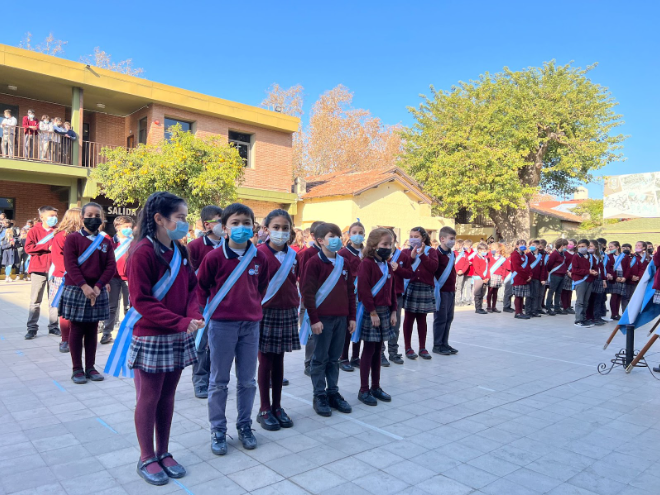

Boletín Junio 2022
Acercándonos ya a la mitad del año, nos reencontramos para compartir algunas de las cosas más significativas vividas en este tiempo en nuestra Comunidad del Valle.
En el Nivel Inicial festejamos el día de los Jardines de infantes, los alumnos de cuarto grado hicieron la promesa a la Bandera, en el Secundario realizamos visitas educativas a museos y lugares históricos, y en el Superior nuestras alumnas ya están realizando las prácticas para la docencia.
Hace unos días nomás, acompañamos a Jesús en la celebración en nuestra Parroquia de la Solemnidad del Corpus Christi.
La Unión de Padres de Familia realizó con gran éxito la venta de empanadas para la Semana de Mayo.
A través de nuestro Instagram institucional hemos ido publicando noticias y acontecimientos de interés de las familias, para mantenernos más unidos en la comunicación, y ya somos varios cientos reunidos en esa red social.
En fin, todo eso y mucho más, en este Boletín.
Día de los Jardines de Infantes y de la Maestra Jardinera

Como cada año, celebrar el día de los Jardines de Infantes es una fiesta inolvidable.
continuar leyendoNivel Secundario. Salidas educativas

Con los alumnos del secundario estamos recuperando las salidas educativas, valiosas ocasiones que les permiten continuar formándose
continuar leyendoNivel Superior
Inicio de las Prácticas Docentes en el Nivel Superior:
Las estudiantes de Nivel Superior comenzaron la primera etapa de la Práctica Docente.

Tal como les adelantáramos en el Boletín anterior, abrimos nuestro Instagram, con novedades, actividades, y noticias de nuestro quehacer institucional.
continuar leyendoLos alumnos de 4to grado hicieron su promesa a la Bandera

En el acto del Día de la Bandera, los estudiantes de cuarto grado pudieron hacer su promesa a la bandera.
continuar leyendoActualización del PEI
Continuamos desarrollando reuniones de trabajo para analizar y definir la base teórica de todo nuestro Proyecto Educativo Institucional. Esto conformará la visión de toda nuestra propuesta.
continuar leyendoUnión de Padres

Con mucha aceptación, la Unión de Padres de Familias llevó a cabo la venta de empanadas para la Semana de Mayo.
continuar leyendo